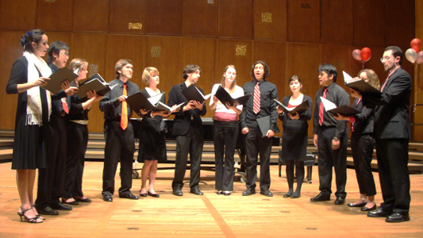
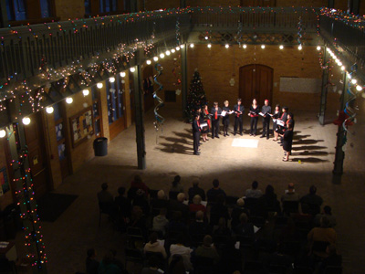
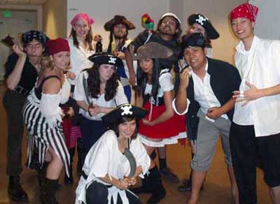
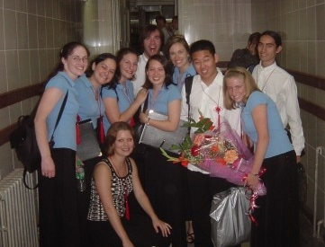
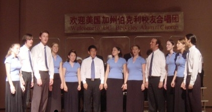
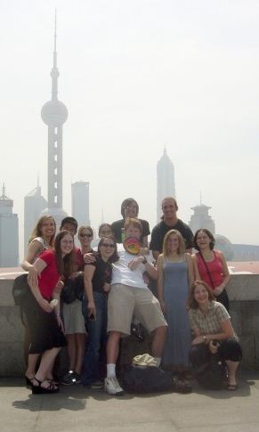

Fall Retreat 2009 - L to R: (back row) Scott, Jeremy, Raf, Vincent, David, Maxime (not pictured: Jonathan), (front row) Stacy, Kealie, Lauren, Elizabeth, Hilary, Genoa, Anna
Valentine Concert 2009

Dept. of Music Valentine's Concert, February 2009 - (L to R) Jonathan, Lauren, Genoa, Scott, Hilary, Maxime, Kealie, Raf, Anna, Vincent, Elizabeth, David
Winter Concert 2008

Winter Concert 2008, When Parody Was Proper - (L to R) Jonathan, Lauren, Jeremy, Genoa, Scott, Hilary, Maxime, Kealie, Raf, Anna, Vincent, Elizabeth, David, Stacy
2008 UCCE Holiday Show
At the annual UC Choral Ensembles' Holiday Show in Dec 2008, Perfect Fifth decided to take the theme of "Surprise Presence/Presents" to a whole new level.
Spring Concert 2008
Takeda Lullaby arr. by Grayston Ives (soloist: Anna Leddy)
Spring Concert 2008, Magellan's Melodies: Music from Around the World - (L to R) Stacy, Eric, Elizabeth, Scott, Elana, Maxime, Joscelyn, Vincent, Kealie, Shomik, Anna
Winter Concert 2007
A beautiful artistic rendition of P5 for a beautiful winter concert, 2007 (courtesy of Doug Raymond) - L to R: Elana, Scott, Kealie, Maxime, Stacy, Eric, Elizabeth, Vincent, Anna, Shomik, Joscelyn
UCCE Halloween Show 2007

Arrr, Matey! P5 Pirates at the UCCE Halloween Show - L to R: (back row) Maxime, Kealie, Scott, Shomik, Elizabeth, (front row) Stacy, Elana, Joscelyn, Vincent, Eric, (kneeling) Anna
UCCE Banquet 2007
After the UCCE Banquet - L to R: (back row) Kealie, Maxime, Stacy, Elana, Joscelyn, Darcy, (front row) Vincent, Scott, Keith, Harvey
UCCE Halloween Show 2006: (L to R) Elana, Galen, Darcy, Maxime, Stacy, Vincent, Joscelyn, Scott. Flashing devil horns added some fun to our Fire/Devil theme.
Fall Retreat 2006
Fall Retreat 2006 - L to R: (back row) Galen, Darcy, Harvey, Kealie, Maxime, Vincent, (front row) Scott, Elana, Joscelyn, Stacy
We returned to Stacy's house for our fall retreat 2006, where we rehearsed some of our repertoire in a wine cave to hear an acoustic similar to that of Hearst Mining on the Cal campus. While there, we practiced one of our favorite pieces, Josef Rheinberger's Abendlied, which you can watch here.
Spring Concert 2006
The Blue Bird by Chalres Villiears Stanford (soloist: Stacy Rutz)
During our China Tour of summer, 2002, at the Ming Tombs, we discover that ten people can make a lot of sound in a stone tunnel. The song is Ach, weh des Leiden, which we're pretty sure that the deceased Ming emperors had never heard before.
Ach, weh des Leiden

We celebrate backstage in Beijing after our very first China concert.Left to right: Emily, Sarah, Caitlin (kneeling), August, Brent, Sabrina, Kristy, Kenji, Brette, Ari

P5 performs in Xian. Left to right: Brette, Brent, Matt, Kristy, Sabrina, Kenji, Sarah, August, David, Emily, Caitlin, Ari
After a cruise down the Li River, our boat arrives at Yangshuo. Left to right: Kristy, Ari, Sabrina, Matt

The group in Shanghai. Back row: Kristy, Kenji, Caitlin, Ari, Brent, David, Sarah; Front row: Emily, Sabrina, Matt, Brette, August